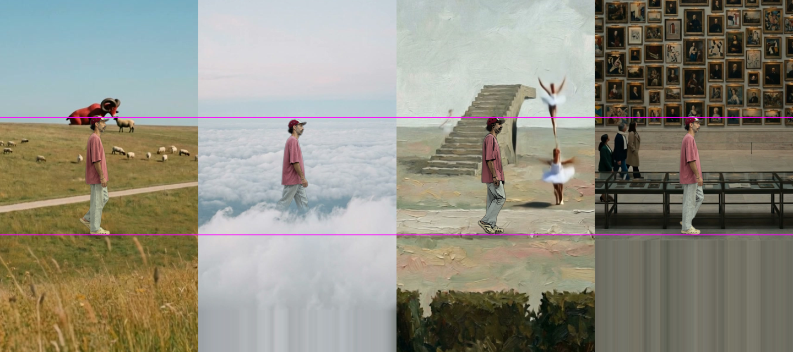

Thirds: you walk in the same place in every world
Middle third is yours: 640 px tall, feet on the lower third line, eye on every horizon. The worlds were moved and scaled around you. 0 credits.
The four worlds on the thirds (pink lines)

v4a, pastel VHS
- Same height, same size, same speed in all four worlds
- Tied into each picture: your colour pulled toward each world, softness matched, light wrap at your edges, contact shadow
- In the painting you are painted too (oil filter on you only)
- Cloud and museum: the clips end above the frame bottom, so the lower third is a smear. The plates were never composed for thirds
- Field: the ram and sheep still grow out of nothing
The fix, all in Plnty
Recompose each PLATE to thirds first, let Plnty fill the missing lower third and put the animals in the field from the first frame, then animate from that frame. Per world about 11 (image) + 63 (Kling o3, star prompt), four worlds about 296. Card read before every run.